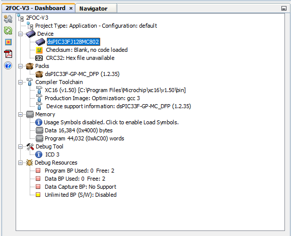
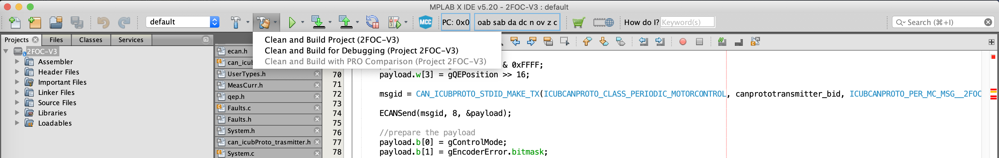

Installing and configuring MPLAB
Here we will guide you through the installation and configuration steps necessary to have MPLAB running on your machine
Note: This tutorial assumes you have already downloaded the repositories for icub firmware, if you have not, please clone the following repositories into the under the same directory: - robotology/icub-firmware - robotology/icub-firmware-shared
Installing the MPLAB X IDE
- Goto https://www.microchip.com/mplab/mplab-x-ide and browse down to "Downloads" section and download the latest version of MPLAB X IDE driver for Windows (currently v5.40).
- follow the instructions and default options
Installing the MPLAB XC Compilers
All the compilers and related dependencies can be downloaded from
https://www.microchip.com/mplab/compilers, in the last section, in the tab
"Compiler Downloads".

- After the install of the MPLAB X IDE is complete, follow the suggestion to download the "MPLAB XC compiler 16 bits" for dsPICs, and download the "MPLAB XC16 Compiler vX.XX" compiler for Windows, in "Compiler Downloads" tab (as shown above), "Compilers" subsection.
- Launch the compiler installation: select the "free" option, and select the default options in the steps that follow.
- Download Install the "MPLAB XC16 Compiler Part-Support Patch vX.XX" from the subsection "Latest Part Support Patch Files". This is a priori for supporting new parts, but actually the dsPIC used in our setup, version 33FJ128MC802, appears in the "supported parts in the update" section of the release notes of the patch.
- Download Install the "Current Peripheral Libraries" -> "16-bit dsPIC33, PIC24E, PIC24H MCUs: Legacy Peripheral Libraries" from the subsection "Peripheral Libraries (PLIBS)" (latest version of "PIC24/dsPIC Peripheral Libraries v2.00 - Windows" here).
Note on the "MPLAB XC16 Compiler vX.XX" compiler
The compiler "MPLAB XC16 Compiler v1.50" alone is missing some dependencies like the include <pwm12.h>. If you build the project without the mentioned additional patches, you'll get the error:
CLEAN SUCCESSFUL (total time: 8ms)
make -f nbproject/Makefile-default.mk SUBPROJECTS= .build-conf
make[1]: Entering directory 'C:/Users/icub/git/icub-firmware/emBODY/eBcode/arch-dspic/board/2foc/appl/2FOC-V3/2FOC-V3.X'
make -f nbproject/Makefile-default.mk dist/default/production/2FOC-V3.X.production.hex
make[2]: Entering directory 'C:/Users/icub/git/icub-firmware/emBODY/eBcode/arch-dspic/board/2foc/appl/2FOC-V3/2FOC-V3.X'
"C:\Program Files\Microchip\xc16\v1.50\bin\xc16-gcc.exe" ../src/2FOC.c -o build/default/production/_ext/1360937237/2FOC.o -c -mcpu=33FJ128MC802 -MMD -MF "build/default/production/_ext/1360937237/2FOC.o.d" -omf=elf -DXPRJ_default=default -legacy-libc -ffunction-sections -mlarge-data -O3 -I"../include" -msmart-io=1 -Wall -msfr-warn=off -mdfp="C:/Program Files (x86)/Microchip/MPLABX/v5.40/packs/Microchip/dsPIC33F-GP-MC_DFP/1.2.35/xc16"
"C:\Program Files\Microchip\xc16\v1.50\bin\xc16-gcc.exe" ../src/DHES.c -o build/default/production/_ext/1360937237/DHES.o -c -mcpu=33FJ128MC802 -MMD -MF "build/default/production/_ext/1360937237/DHES.o.d" -omf=elf -DXPRJ_default=default -legacy-libc -ffunction-sections -mlarge-data -O3 -I"../include" -msmart-io=1 -Wall -msfr-warn=off -mdfp="C:/Program Files (x86)/Microchip/MPLABX/v5.40/packs/Microchip/dsPIC33F-GP-MC_DFP/1.2.35/xc16"
"C:\Program Files\Microchip\xc16\v1.50\bin\xc16-gcc.exe" ../asm/MeasCurr.s -o build/default/production/_ext/1360919980/MeasCurr.o -c -mcpu=33FJ128MC802 -omf=elf -DXPRJ_default=default -legacy-libc -I"../asm" -Wa,-MD,"build/default/production/_ext/1360919980/MeasCurr.o.d",--defsym=__MPLAB_BUILD=1,--no-relax -mdfp="C:/Program Files (x86)/Microchip/MPLABX/v5.40/packs/Microchip/dsPIC33F-GP-MC_DFP/1.2.35/xc16"
"C:\Program Files\Microchip\xc16\v1.50\bin\xc16-gcc.exe" ../src/Faults.c -o build/default/production/_ext/1360937237/Faults.o -c -mcpu=33FJ128MC802 -MMD -MF "build/default/production/_ext/1360937237/Faults.o.d" -omf=elf -DXPRJ_default=default -legacy-libc -ffunction-sections -mlarge-data -O3 -I"../include" -msmart-io=1 -Wall -msfr-warn=off -mdfp="C:/Program Files (x86)/Microchip/MPLABX/v5.40/packs/Microchip/dsPIC33F-GP-MC_DFP/1.2.35/xc16"
"C:\Program Files\Microchip\xc16\v1.50\bin\xc16-gcc.exe" ../src/PWM.c -o build/default/production/_ext/1360937237/PWM.o -c -mcpu=33FJ128MC802 -MMD -MF "build/default/production/_ext/1360937237/PWM.o.d" -omf=elf -DXPRJ_default=default -legacy-libc -ffunction-sections -mlarge-data -O3 -I"../include" -msmart-io=1 -Wall -msfr-warn=off -mdfp="C:/Program Files (x86)/Microchip/MPLABX/v5.40/packs/Microchip/dsPIC33F-GP-MC_DFP/1.2.35/xc16"
"C:\Program Files\Microchip\xc16\v1.50\bin\xc16-gcc.exe" ../src/ADC.c -o build/default/production/_ext/1360937237/ADC.o -c -mcpu=33FJ128MC802 -MMD -MF "build/default/production/_ext/1360937237/ADC.o.d" -omf=elf -DXPRJ_default=default -legacy-libc -ffunction-sections -mlarge-data -O3 -I"../include" -msmart-io=1 -Wall -msfr-warn=off -mdfp="C:/Program Files (x86)/Microchip/MPLABX/v5.40/packs/Microchip/dsPIC33F-GP-MC_DFP/1.2.35/xc16"
"C:\Program Files\Microchip\xc16\v1.50\bin\xc16-gcc.exe" ../src/System.c -o build/default/production/_ext/1360937237/System.o -c -mcpu=33FJ128MC802 -MMD -MF "build/default/production/_ext/1360937237/System.o.d" -omf=elf -DXPRJ_default=default -legacy-libc -ffunction-sections -mlarge-data -O3 -I"../include" -msmart-io=1 -Wall -msfr-warn=off -mdfp="C:/Program Files (x86)/Microchip/MPLABX/v5.40/packs/Microchip/dsPIC33F-GP-MC_DFP/1.2.35/xc16"
"C:\Program Files\Microchip\xc16\v1.50\bin\xc16-gcc.exe" ../src/DCLink.c -o build/default/production/_ext/1360937237/DCLink.o -c -mcpu=33FJ128MC802 -MMD -MF "build/default/production/_ext/1360937237/DCLink.o.d" -omf=elf -DXPRJ_default=default -legacy-libc -ffunction-sections -mlarge-data -O3 -I"../include" -msmart-io=1 -Wall -msfr-warn=off -mdfp="C:/Program Files (x86)/Microchip/MPLABX/v5.40/packs/Microchip/dsPIC33F-GP-MC_DFP/1.2.35/xc16"
"C:\Program Files\Microchip\xc16\v1.50\bin\xc16-gcc.exe" ../src/can_icubProto.c -o build/default/production/_ext/1360937237/can_icubProto.o -c -mcpu=33FJ128MC802 -MMD -MF "build/default/production/_ext/1360937237/can_icubProto.o.d" -omf=elf -DXPRJ_default=default -legacy-libc -ffunction-sections -mlarge-data -O3 -I"../include" -msmart-io=1 -Wall -msfr-warn=off -mdfp="C:/Program Files (x86)/Microchip/MPLABX/v5.40/packs/Microchip/dsPIC33F-GP-MC_DFP/1.2.35/xc16"
Options have been disabled due to restricted license
Visit https://www.microchip.com/compilers to purchase a new key.
In file included from ../src/Faults.c:5:0:
../include/PWM.h:10:19: fatal error: pwm12.h: No such file or directory
compilation terminated.
The peripheral libraries are no longer shipped with the compiler package. These may be downloaded separately from the MPLAB XC download page.
Running the MPLAB X IDE [WIP]
- Run app MPLAB X IDE v5.40.
- Open the project 2FOC-V3.X (shortcut CTRL+SHIFT+O on windows).
- You should see in the lower left pane:

The 2FOC device is the dsPIC33FJ128MC802.
- Then, click on Packs - dsPIC33F-GP
- You should see a popup window with the project properties:

Just click "OK".
- Clean and Build the project as shown below:
